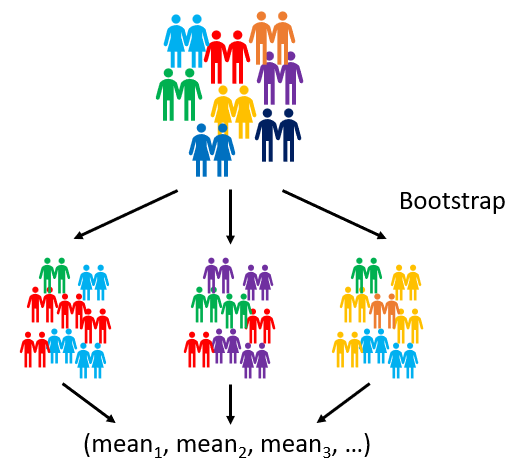
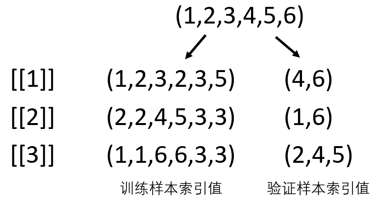

第1章 基本介绍
1.1 命名
1.2 向量的缺失值处理
container_1 <- c(NA, NULL, NA, NaN) # 请勿修改此代码
container_2 <- c(10, NA, NULL, NaN, 20, 30) # 请勿修改此代码
#### 在此部分之后书写代码，回答下面问题 ####1.3 正则表达式
1.4 向量元素提取
给定month_var向量，从第2个元素开始，每隔2个位置提取一个元素，直至向量结束。
比如：给定向量c(1,2,3,4,5,6)，最终生成的向量应该为c(2,5)。
#### 请勿修改此部分代码 ####
month_var <- month.abb # 创建向量
#### 在此之后编写代码 ####"使用 seq() 函数"1.5 循环
使用循环语句对var_matrix矩阵按行求和。
例：输入矩阵为: \[\begin{bmatrix} 0&1&1\\ 1&0&0\\ \end{bmatrix}\]
输出结果为：
第1行的总和为：2
第2行的总和为：1
#### 请勿修改此部分代码 ####
var_matrix <- matrix(seq(1:6), nrow=3) # 创建矩阵
#### 在此之后编写代码 ####"使用 for 或 while 循环求和"1.6 总体均值及标准误的推断
bootstrap抽样是有放回的重抽样方式，可以用于统计推断。以总体均值和标准误的推断为例，具体操作为，在每一轮 bootstrap 抽样中，从原始样本中有放回地随机抽取样本至原有样本量大小，组成新样本，计算该样本的样本均值，保存至向量中。经过k轮抽样，一共能生成 k 个样本均值数据，再基于生成的样本均值数据，计算均值即为总体均值，计算标准差即为标准误。请定义一个 bootstrap_inference 函数，使其能返回 k 轮 bootstrap 抽样后推断BMI的总体均值及标准误。

#### 请勿修改此部分代码 ####
set.seed(1) # 设置随机种子
bmi_data <- rnorm(30, mean=22, sd=2) # 创建输入数据
#### 在此之后编写代码 ####
bootstrap_inference <- function(){}
# 创建好 bootstrap_inference 后，基于 bmi_data 输出 100 轮 bootstrap 抽样生成的总体均值及标准误"使用 sample() 函数随机抽样并计算新样本均值进行存储"1.7 bootstrap抽样-索引值
在建模过程中，遇到样本量较小的情况时，也可以采用bootstrap抽样方法扩充样本量。具体操作为，在每一轮bootstrap抽样中，从原始样本中有放回地随机抽取样本至原有样本量大小，组成训练样本进行建模，并将未被抽到的样本当做验证样本进行模型评价。其中就需要根据索引值确定训练样本与验证样本。请定义一个bootstrap_idx函数，使其能返回k轮bootstrap抽样生成的索引值列表。每个列表元素为一轮抽样的结果，该结果分别存储了训练样本与验证样本的索引值。

#### 请勿修改此部分代码 ####
set.seed(1) # 设置随机种子
input_index <- seq(10) # 创建输入索引值
#### 在此之后编写代码 ####
bootstrap_idx <- function(){}
# 创建好 bootstrap_idx 后，基于 input_index 输出2轮bootstrap抽样生成的训练样本与验证样本索引值"想想看如何处理重复值以及如何分别存储索引值"第2章 数据读取与预处理
2.1 excel文件读取
在excel文件读取的章节中，我们学习了如何读取一个excel中的所有工作表。现在请将那部分代码改写成一个函数multi_reader()（包含“文件”以及“工作表”两个参数），使其能读取指定excel文件的指定工作表并返回一个列表，列表中的各个元素名称为对应的工作表名称。
# 载入readxl包
# 完成multi_reader()函数
multi_reader <- function(){}
# 使用 multi_reader() 函数读取 goods.xlsx 文件中2000年之后的所有工作表并返回一个列表
# 注：2000年之后的工作表必须R自动查找完成，不能手动输入2.2 变量的拆分
由于数据来源不同，在进行变量拆分时，我们有时会遇到分隔符不统一的情况，这时应该如何拆分变量呢？# 载入tidyverse包
# 读取darwin数据
# 将 region 变量拆分为 state 和 city2.3 宽数据转为长数据
将下方数据框转为长数据，目标变量为包含x和abc的变量，新生成var变量收纳元素x和abc，新生成wave变量收纳x和abc变量的数字。新生成value变量收纳目标变量的值。
-不能被收纳进任何变量。
#### 请勿修改此部分代码 ####
set.seed(1)
id = seq(1,6)
sex = c(rep(c("M","F"), times=3))
x_11 = rnorm(6, 10, 2)
x_12 = rnorm(6, 10, 2)
x_13 = rnorm(6, 10, 2)
abc2011 = rnorm(6, 10, 2)
abc2012 = rnorm(6, 10, 2)
abc2013 = rnorm(6, 10, 2)
df <- data.frame(id, sex, x_11, x_12, x_13, abc2011, abc2012, abc2013)
#### 在此之后编写代码 ####
# 载入tidyverse包
# 将 df 中的 x 和 abc 变量转为长数据格式2.4 按条件创建变量
根据国别以及BMI数据进行BMI分类。国内外的BMI评价标准如下:
| 国内BMI标准 | 欧美BMI标准 | BMI分类 |
|---|---|---|
| BMI<18.5 | BMI<18.5 | 体重过低 |
| 18.5<=BMI<24 | 18.5<=BMI<25 | 体重正常 |
| 24<=BMI<28 | 25<=BMI<30 | 超重 |
| BMI>=28 | BMI>=30 | 肥胖 |